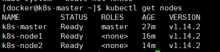

yum update
# 配置源
cat <<EOF > /etc/yum.repos.d/kubernetes.repo
[kubernetes]
name=Kubernetes
baseurl=https://mirrors.aliyun.com/kubernetes/yum/repos/kubernetes-el7-x86_64
enabled=1
gpgcheck=1
repo_gpgcheck=1
gpgkey=https://mirrors.aliyun.com/kubernetes/yum/doc/yum-key.gpg https://mirrors.aliyun.com/kubernetes/yum/doc/rpm-package-key.gpg
EOF
# 安装
yum install -y kubelet kubeadm kubectl kubernetes-cni
kubelet：运行在Cluster所有节点上，负责启动Pod和容器
kubeadm：初始化Cluster
kubectl：K8s命令行工具，可以部署和管理应用，查看资源，创建、删除和更新各种组件
kubeadm初始化Cluster
修改主机名称
sudo hostnamectl set-hostname <newhostname>
更换yum源**
备份本地yum源
yum install -y wget
mv /etc/yum.repos.d/CentOS-Base.repo /etc/yum.repos.d/CentOS-Base.repo_bak
获取阿里yum源配置文件
wget -O /etc/yum.repos.d/CentOS-Base.repo http://mirrors.aliyun.com/repo/Centos-7.repo
更新cache
yum makecache
查看
yum -y update
启动kubelet
systemctl enable docker && systemctl start docker
systemctl enable kubelet && systemctl start kubelet（init时会自动启动）
#查看错误日志
journalctl -xefu kubelet
journalctl -f -u kubelet.service
关闭swap内存
swapoff -a
free -h
#也可以如下
vi /etc/fstab
#/dev/mapper/centos-swap swap swap defaults 0 0
解决 /proc/sys/net/bridge/bridge-nf-call-iptables contents are not set to 1
echo "1" >/proc/sys/net/bridge/bridge-nf-call-iptables
node "k8s-master" not found
去掉<--apiserver-advertise-address 192.168.56.105>，使用默认接口配置
vi /etc/yum.repos.d/kubernetes.repo
[kubernetes]
name=Kubernetes Repo
baseurl=https://mirrors.aliyun.com/kubernetes/yum/repos/kubernetes-el7-x86_64/
gpgcheck=0
enabled=1
更新cache
yum makecache
查看
yum -y update
初始化过程会出现连接国外网络超时，解决：**
docker pull coredns/coredns:1.3.1
docker pull mirrorgooglecontainers/kube-apiserver:v1.14.2
docker pull mirrorgooglecontainers/kube-controller-manager:v1.14.2
docker pull mirrorgooglecontainers/kube-scheduler:v1.14.2
docker pull mirrorgooglecontainers/kube-proxy:v1.14.2
docker pull mirrorgooglecontainers/etcd:3.3.10
docker pull mirrorgooglecontainers/pause:3.1
docker tag mirrorgooglecontainers/kube-apiserver:v1.14.2 k8s.gcr.io/kube-apiserver:v1.14.2
docker tag mirrorgooglecontainers/kube-controller-manager:v1.14.2 k8s.gcr.io/kube-controller-manager:v1.14.2
docker tag mirrorgooglecontainers/kube-scheduler:v1.14.2 k8s.gcr.io/kube-scheduler:v1.14.2
docker tag mirrorgooglecontainers/kube-proxy:v1.14.2 k8s.gcr.io/kube-proxy:v1.14.2
docker tag mirrorgooglecontainers/pause:3.1 k8s.gcr.io/pause:3.1
docker tag mirrorgooglecontainers/etcd:3.3.10 k8s.gcr.io/etcd:3.3.10
docker tag coredns/coredns:1.3.1 k8s.gcr.io/coredns:1.3.1
中间出现错误需要重置集群节点状态化
kubeadm reset
开始初始化
kubeadm init <--pod-network-cidr=10.244.0.0/16> --kubernetes-version v1.14.2
kubeadm reset && systemctl start kubelet && kubeadm init --kubernetes-version v1.14.2
--apiserver-advertise-address：指明用Master的哪个Interface与Cluster的其他节点通信。如果Master有多个Interface，建议明确指定，如果不指定，kubeadm会自动选择有默认网关的Interface.
--pod-network-cidr：指定Pod网络范围。10.244.0.0/16是因为我们将使用flannel网络方案，必须设置成这个CIDR。
Your Kubernetes control-plane has initialized successfully!
To start using your cluster, you need to run the following as a regular user:
mkdir -p $HOME/.kube
sudo cp -i /etc/kubernetes/admin.conf $HOME/.kube/config
sudo chown $(id -u):$(id -g) $HOME/.kube/config
You should now deploy a pod network to the cluster.
Run "kubectl apply -f [podnetwork].yaml" with one of the options listed at:
https://kubernetes.io/docs/concepts/cluster-administration/addons/
Then you can join any number of worker nodes by running the following on each as root:
kubeadm join 192.168.129.132:6443 --token ysqdvu.dzn7l4shglpbad8t \
--discovery-token-ca-cert-hash sha256:d503d057101b3e34f705aff4151d6eb679044a9c6897c2220300443c9368b27f
为用户docker配置kubectl
groupadd docker
useradd -g docker docker
passwd docker
执行普通用户命令报错
docker 不在 sudoers 文件中。此事将被报告。
进去root，打开/etc/sudoers。在root ALL=(ALL:ALL) ALL下面添加个人用户，保存即可。
:wq！
配置kubectl命令执行权限
mkdir -p $HOME/.kube sudo cp -i /etc/kubernetes/admin.conf $HOME/.kube/config sudo chown $(id -u):$(id -g) $HOME/.kube/config
为了更便捷，启用kubectl命令的自动补全功能
echo "source <(kubactl completion bash)" >> ~/.bashrc
设置master为不可调度 kubectl taint nodes k8s-master node-role.kubernetes.io/master=:NoSchedule
解除配置，设置master可以被调度运行pod kubectl taint nodes --all node-role.kubernetes.io/master-
安装Node加入集群
在Node主机上执行安装：docker、kubelet、kubectl、kubeadm、kubernetes-cni
同时设置docker和kubelet启动和开机启动
具体代码模仿上面
如果 token 失效，到主节点执行：kubeadm token create 重新生成
《时好时坏，随机应变吧》必须在加入集群之前也进行一次kubeadm init，否则无法启动Kubelet执行kubeadm join命令加入集群
kubeadm join 192.168.129.132:6443 --token ysqdvu.dzn7l4shglpbad8t \
--discovery-token-ca-cert-hash sha256:d503d057101b3e34f705aff4151d6eb679044a9c6897c2220300443c9368b27f
安装网络插件
查看官网https://kubernetes.io/docs/setup/independent/create-cluster-kubeadm/
kubectl apply -f https://git.io/weave-kube-1.6
添加flannel网络
wget https://raw.githubusercontent.com/coreos/flannel/master/Documentation/kube-flannel.yml
#版本信息：quay.io/coreos/flannel:v0.10.0-amd64
kubectl create -f kube-flannel.yml
